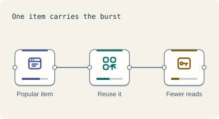

Scale the data · 3 minutes
When one item is popular
Sharding spreads keys, not popularity. One star item can still overload one shard.
Open this lesson
The celebrity problem
Shards split keys evenly, but not attention. If one post goes viral, every request for it lands on the one shard that holds it. That shard melts while the others sit idle.
Ways out
Adding shards spreads different keys. It does not divide the work on one popular key. Try coalescing those reads.
Try the idea
One item gets a third of all reads. Protect the shards with a cache.
Key numbers
- One shard handles
- ≈ 1/6 of traffic when even. with six shards
- A hot item with 30 percent of reads
- ≈ 2.5 times a fair share on its shard. its shard carries 30 + 70 ÷ 6 ≈ 42 percent of reads, against a fair 16.7 percent: 42 ÷ 16.7 ≈ 2.5
- Cache answer
- ≈ 0.5 ms. approx.
Check your reasoning
Think through these questions before opening the lesson. In the game you can test the idea and compare your reasoning.
- Does adding shards fix a hot key?
- Which is a good fix?
- Why do hot keys surprise teams?
The key point
Spread keys with shards and spread attention with caches and copies.
Practise this idea
- Medium
Rate limiter for a public API
Developers call your public API from scripts and apps. A few misbehaving or malicious clients can crowd out everyone else. Build limits that are fair, fast and cheap, and that survive a retry storm.
- Medium
Short-video feed
People swipe through an endless feed of clips of 10 to 30 seconds. The next clip must already be on the phone before the swipe. One clip can suddenly get millions of views, and every view is a signal that picks what to show next.
- Easy
Comments and likes
Under every post sits a like counter and a comment list. Millions tap the heart on the same famous post at the same moment. Showing the exact number is not essential, but showing the person their own like is.
- Hard
Social feed
Every person opens the app and sees a feed of posts from the people they follow. Most people have a few hundred followers, but a few have millions, and when they post, millions of feeds must change. The feed must be fast and your own post must show up at once.